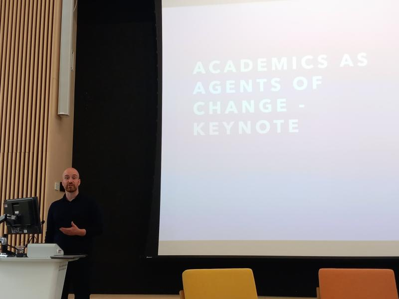

Talks & Media

Invited academic talks
Keynotes and invited addresses
- Keynote Speaker. Academics as Agents of Change. Centre for Climate Change and Social Transformations, Cardiff University, UK, 2025.

Conferences & presentations (Selection)
- Beyond Research: Identity and Ethical Tensions Among Scientists Engaged in Climate Advocacy. BPS Social Psychology Section Annual Conference. Lady Margaret Hall, University of Oxford, UK, 2025.

- Climate Futures: Scientists’ Discourses on Collapse versus Transformation. Small Group Meeting – Envisioning the Future as a Driver of Individual and Collective Change for the Sustainable Development. Psychology Institute of the Université Paris Cité, Paris, France, 2025.
- Ethnography of Scientist-activists: Challenges of Openness and Transparency in Qualitative Research. Qualitative Research Symposium, Bath University, UK, 2025.
- Why are Scientists Becoming Climate Activists? International Conference on Environmental Psychology. Qualitative Research Symposium, Vilnius, Lithuania, 2025.
- How Scientist Identity Shapes Environmental Activism. Climate University Conference on Higher Education and the Climate crisis. Senate House, London. 2023.
- The Role of Social Psychology in Addressing Climate Breakdown. June 30th, 2023. European Association of Social Psychology General Meeting Pre-Conference Krakow, Poland, 2023
- Scientists as activists: examining the intersection between climate activism, and scientist identity (Poster). European Association of Social Psychology General Meeting, Krakow, Poland, 2023.
- The role of social identity in pro-environmental consumption, activism, and human prioritisation (Symposium). June 2023. Animal Advocacy Conference, Keynes College, University of Kent.
Media & Podcasts
- Panellist, Scientists, Advocacy, and Public Trust (Newswise, 2025) – invited expert on academic advocacy. Panellists from MIT, CALTECH, the American Association of Universities https://vimeo.com/1124387582
Guest on This is Lancaster. Global research tales from the North of England podcast. Topic: Reimagining Research Culture: Universities’ response to the climate crisis https://open.spotify.com/episode/5UVYguIc4k4FgydqQecWoD?si=415ad01913cc4668
Research Footage Contributions to Documentaries. Research footage incorporated in #ClimateScam? (Cornwall Climate Care, 2024), Plan Z: From Lab Coats to Handcuffs (Morozov & Jones, 2024), and Climate Carnage: Whose Job Is It to Save the Planet (The Guardian, 2022), supporting wider public discussion on climate activism and responsibility.
Workshops & Public Engagement
Designer, Organiser & Facilitator, Cuppa Conundrums: Ethics in Practice series (Lancaster University, 2024–26) – interdisciplinary workshops on climate responsibility, AI, and research ethics. See here for podcast https://open.spotify.com/show/3dineWPW6jNZfQMZhnfOtb
Designer, Organiser & Facilitator, Exploring Climate Action in Higher Education workshops (Lancaster University / Wellcome Trust, 2024–25) – cross-institutional workshops. Summary

- Chair, What Role Can Social Science Play in the Climate Emergency? (2022) – public dialogue featuring Dr Gail Bradbrook (Extinction Rebellion Co-founder), Prof Stellan Vinthagen, and Dr. Sara Vestergren.